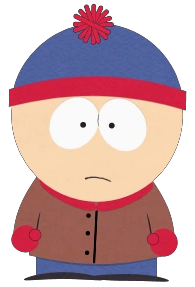

Sinopsis:
South Park es una serie de televisión estadounidense de animación, creada por Trey Parker y Matt Stone para el canal Comedy Central. Está dirigida al público adulto y se caracteriza por satirizar con humor negro la sociedad, actualidad y cultura estadounidense a través de las historias y situaciones surrealistas que les suceden a sus protagonistas,cuatro chicos (Stan, Kyle, Cartman y Kenny) residentes en un pueblo ficticio de Colorado que se llama South Park.
Personajes Principales:

Stan Marsh
Él es el más normal del grupo, muy maduro para su edad y bien intencionado. Su frase más famosa es "¡Oh Dios mío, mataron a Kenny!". Stan es un estudiante del cuarto grado de la Escuela Primaria de South Park. Su padre, Randy es geólogo, y su madre, Sharon es secretaria en una Clínica de Rinoplastia..Es el único personaje que ha tenido una novia estable.
Eric Cartman
Ninguno de los otros personajes considera a Cartman como su amigo y no se sabe porque comenzaron a salir con él en primer lugar; sin embargo, suele ser la primera opción de Kyle cuando rompe su amistad con Stan. En episodios anteriores, Kenny era su mejor amigo, sin embargo, en las temporadas posteriores, Butters Stotch se representa generalmente como tal. Básicamente un malcriado que además es racista. Cartman fue el primero de los chicos que aparece sin su sombrero, como se ve en "¡Feliz Navidad, Charlie Manson!". También se sabe que pesa 40 kilos, como se revela en "Aumento de Peso 4000".
Kyle Broflovski
Kyle es el más listo de los cuatro protagonistas, por lo que se le considera la voz de la razón en el grupo. A diferencia de su mejor amigo Stan, es más precavido y tiende a involucrarse menos en situaciones peligrosas. A veces muestra mejores valores morales que el resto de sus amigos. Kyle y Ike son los únicos niños judíos en el pueblo, por eso, Kyle es frecuentemente objeto de los insultos de Eric Cartman quien lo molesta por ser judío.
Kenny McCormick
Es famoso porque no se le entiende cuando habla, debido que la capucha de su abrigo está muy ajustada.También es conocido por morir en casi todos lo episodios, a lo cual normalmente sigue una exclamación de Stan:"¡Oh, Dios mío! ¡Mataron a Kenny!, seguido de Kyle diciendo: "¡Hijos de ****!". En un episodio (Temporada 5 episodio 13), Kenny muere de forma aparentemente definitiva por una enfermedad, pero vuelve aparecer al final de la siguiente temporada..